Screens
Norilsk on the FM-1's screen, as the firmware draws it: few words, very large type, high contrast, a colour for each generator — red, blue, green. Nothing else is drawn: no cables, no scopes.
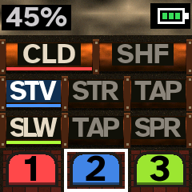
The machine
The three generators as large numbered blocks, the one chosen framed in white; under them the three effect slots, a row each, their effects as tiles: SPR spring, FLD fold, MU mulaw, MDL modal, REV reverb, TAP tape, DLY delay.
Each tile is bordered in the colours of the generators cabled into it; the tiles the chosen generator feeds are filled with its colour; a tile brightens as sound passes through it. Top left, the audio's load; top right, the battery.
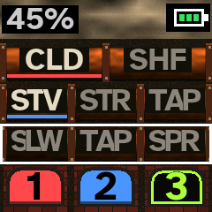
An effect slot chosen
Its row framed in white. HOME draws it a new recipe; the first black key rewires it; SHIFT and the first black key throw its values (RAND PARAMS); its button held mutes it, and its row goes dark.
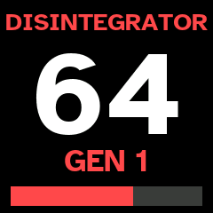
DISINTEGRATOR
KNOB 1 while playing: the chosen generator's DISINTEGRATOR, 0 to 100, over the whole screen for a moment, in the generator's colour. Its pulses gate, stutter, crush and throw that generator's sound about.
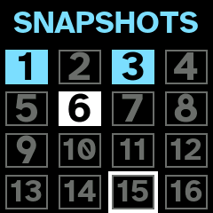
Snapshots
SAVE: the session's sixteen snapshots, one to a white key. Stored ones glow, the one chosen is white, the one framed (PRESETS) outlined. A white key let go recalls, held stores the whole machine into it.
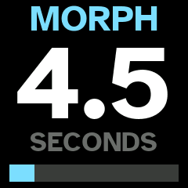
The morph
KNOB 1 on the SNAPSHOTS page: how long a recalled snapshot takes to flow into place, 0 to 30 seconds. Levels, pans, sends and values glide; sounds and effect chains cross over in turn.
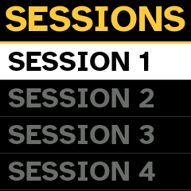
Sessions
SHIFT + SAVE: the sixty-four session slots, the number very large, red when it holds a session, grey when empty. SAVE loads one (or starts afresh in an empty one); SAVE held saves.
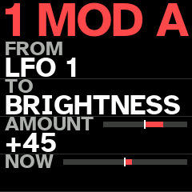
Modulation
SEQ, a third time: the chosen slot's two LFOs and eight routes, A to H, each FROM a source TO a destination by an AMOUNT; NOW shows what it does at this moment.
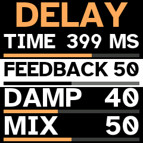
The master
SEQ: the DELAY page, then the REVERB page — KNOB 1 to 4 each a row, the one turned shown black on white. KNOB 3 and KNOB 4 set each generator's sends to them.
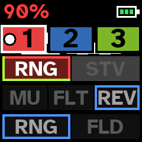
The looper
REC arms a loop on the chosen generator; the first note starts it, REC again ends it and it plays. A dot in the generator's block while it records.
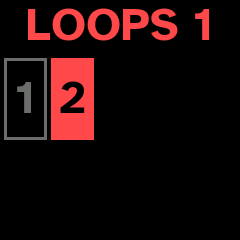
The loops
PLAY held: the generator's loops on the white keys, each taken out or brought back; the 4th to 8th black keys, glowing, play them reversed, back and forth, at random, at half or double speed.
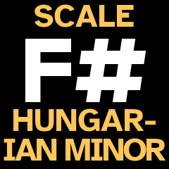
The scale
ARP: SELECT the root, ALGORITHM the scale (twenty-three of them). The white keys play its degrees from the root up.